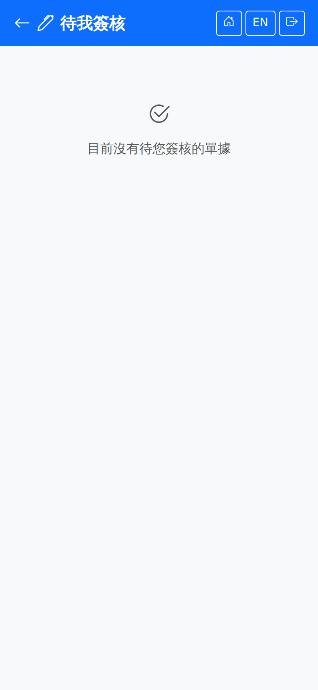

待我簽核（手機）My Approvals (Mobile)
首頁點「待我簽核」進入。圖示上的數字是目前輪到你的單據筆數，沒有待簽時不顯示數字。這個入口不需要手機模組權限——看得到哪些單，完全由簽核流程決定誰是這一關的簽核人，與桌機的「待我簽核」是同一份清單。Tap "My Approvals" on the home page. The number on the tile is how many documents are waiting for you right now, and no number is shown when there are none. This entry point does not need a mobile module permission — what you see is decided entirely by who the approval flow says the approver for this step is, and it is the same list as "My Pending Approvals" on the desktop.

清單上看得到什麼What the list shows
| 欄位Field | 說明Notes |
|---|---|
| 單別（灰色標籤）Document type (grey badge) | 單別名稱，依介面語系顯示，例如「請購單」、「工單」。與桌機的「待我簽核」用的是同一份名稱，同一張單在電腦和手機上叫法一致。The document type name in the interface language, such as "Purchase Request" or "Work Order". It comes from the same list as the desktop pending list, so a document is named the same on the computer and the phone. |
| 第 N 關Step N | 這張單目前停在簽核流程的第幾關。Which step of the approval flow the document is sitting at. |
| 單號Document number | 卡片上最大的一行。The largest line on the card. |
| 申請人 · 申請時間Requester · date | 誰送的審、什麼時候送的。Who submitted it and when. |
簽核步驟Steps
「簽核內容」視窗怎麼讀Reading the "For approval" dialog
| 區塊Area | 說明Notes |
|---|---|
| 金額Amount | 最上方的大字，含幣別。沒有金額概念的單別（例如請購單、工單）顯示「此單別無金額」——這與「金額 0 元」是兩回事，畫面刻意分開表示。The large figure at the top, with its currency. Document types that have no amount at all (a purchase request or a work order, for example) show "No amount for this document type" — that is not the same thing as an amount of zero, and the screen deliberately keeps them apart. |
| 廠別與主檔欄位Plant and header fields | 每個單別各自決定要顯示哪幾個欄位，挑的是「不看就簽不下去」的那幾個。Each document type decides which header fields to show, and the ones chosen are those you cannot sensibly approve without. |
| 明細Lines | 品項、數量與單位、金額。明細很多時只顯示前面幾筆，並在最後明說「另有 N 筆未顯示」，要看完整明細請用電腦版。Item, quantity with its unit, and amount. On a long document only the first few lines are shown and the dialog says "N more line(s) not shown" at the bottom; open the desktop app for the full list. |
哪些單別可以在手機簽Which document types can be approved on mobile
目前有 14 個單別可以在手機上直接簽核：There are 14 document types that can be approved on the phone today:
| 模組Module | 單別Document types |
|---|---|
| 採購（PUR）Purchasing (PUR) | 請購單、採購單、進貨單、進貨退出、委外收貨、供應商評分卡Purchase Request, Purchase Order, Goods Receipt, Goods Return, Outsource Receipt, Vendor Evaluation |
| 訂單（ORD）Orders (ORD) | 銷售訂單、出貨單、銷退單、內部訂單Sales Order, Goods Shipment, Sales Return, Internal Order |
| 製造（MFG）Manufacturing (MFG) | 工單Work Order |
| 品保（QCR）Quality (QCR) | 不合格品單（NCR）Non-Conformance Report |
| 財務（FIN）Finance (FIN) | 應付帳款、應收帳款AP Invoice, AR Invoice |
其餘單別在手機上看得到、但簽不了，卡片下方會明說「此單別目前無法在手機上簽核，請用電腦版」，並附上電腦版連結。這是刻意的降級，不是故障：The remaining types are visible but cannot be approved on the phone. The card says "This document type cannot be approved on mobile yet; please use the desktop app" and offers a desktop link. This is a deliberate limitation, not a fault:
| 類型Kind | 為什麼不在手機簽Why not on mobile |
|---|---|
主檔異動Company、Product、TaxMaster data changesCompany, Product, Tax | 不是交易單據，沒有金額與明細，摘要能提供的資訊與清單上看到的一樣多。These are not transactions: there is no amount and no line detail, so a summary would say no more than the list already does. |
| 倉庫作業類 報廢、借出、樣品、庫存調整、調撥、跨廠調撥、委外領退料、重工領料、備料單、進貨費用分攤Warehouse documents Scrap, loan, sample, stock adjustment, transfer, cross-plant transfer, outsource material, rework material, staging order, landed cost allocation | 判斷依據是實體庫存與儲位（或整張差異表、分攤比例），摘要上的品號數量不足以支撐決定。在手機上放一顆核准鈕，等於鼓勵盲簽。The decision rests on the physical stock and its locations (or on a whole variance sheet, or allocation ratios); an item-and-quantity summary is not enough to support it. Putting an approve button on the phone would be inviting blind approval. |
斷線與狀態變動No connection and state changes
簽核不會暫存補送。沒有網路時按核准或駁回，畫面會立刻提示「目前沒有網路連線。簽核不會排隊補送，請等連線恢復後再簽。」與報工、盤點不同——那些是現場事實的回報，晚幾分鐘送出沒有差別；簽核是一個當下的決定，排隊等於在使用者不知情的狀況下延後生效。Approvals are never queued. Tapping approve or reject with no connection shows "No connection. Approvals are never queued for later — please wait until the connection is back." straight away. This differs from production reporting or stock counting: those record something that happened on the floor and a few minutes' delay changes nothing, whereas an approval is a decision made now, and queuing it would delay its effect without the approver knowing.
若在你開著視窗的期間這張單已被撤回、或被其他簽核人處理掉，送出會被擋下並顯示原因，清單隨即重新載入——你看到的會是「現在」真正待簽的清單，而不是剛才那一份。If the document is withdrawn, or handled by another approver while your dialog is open, the submission is rejected with an explanation and the list reloads — what you then see is the list as it stands now, not the one you opened.
單據若已不存在、或不在你目前的廠別，視窗會顯示「這張單已不存在，或不在你目前的廠別。」並且不提供核准與駁回按鈕——看不到內容就不給簽。When the document no longer exists, or is not in your current plant, the dialog says "This document no longer exists, or is not in your current plant." and offers no approve or reject buttons — if you cannot see it, you cannot sign it.
與桌機的分工Mobile and desktop
手機與桌機的「待我簽核」是同一份清單，在哪一邊簽都一樣，簽完另一邊就會少一張。桌機另外提供手機沒有的功能：完整單據內容、簽核歷程、以及管理者用的「所有簽核記錄」（追查卡住的單、重新指派簽核人），見Mobile and desktop share the same pending list: sign on either one and the other loses that document. The desktop offers what the phone does not — the full document, the approval history, and the manager's "All Approval Requests" view for tracking down stuck requests and reassigning approvers; see 線上簽核Approvals。.